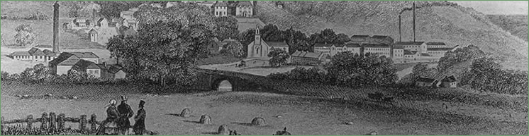

Schools
 |
{kind=link}
The Paper Mill Schools Valleyfield School was opened by the Misses Cowan in 1823 as an Infant and Industrial school for the children of the mill workers and 24 girl employees. The fees were 8d per month, payable in advance, but much less than the other schools. A similar school at Dublin Street, Kirkhill, was established by the Misses Brown from Eskmills. The curriculum included English, writing, arithmetic, grammar, geography, history and needlework. Due to an increase in the school roll, in 1845 Alex Cowan applied to Sir George Clerk for permission to build a new school on Clerk land. Sir George would grant permission if the girls were only taught sewing. Mr Cowan refused to do this, as the girls had always been given a full education. The new school was never built. |
||||
Wanting to ensure his female work force had a good education, in the 1860’s, those under 22 were obliged to sit tests in reading, writing, arithmetic and sewing. Those not achieving a certain standard were obliged to take evening classes 4 nights a week during the winter months. Miss Dunlop was paid £9 to teach 61 girls. 35 boys were sent to Mr. Munro at Kirkhill School, who was paid 5/- for each of them, but had to provide his own heat and light. On a visit in November 1867, George Cowan found the boys doing well in writing and arithmetic. The 46 girls attending could all read, but a few were admonished for impertinence at the sewing class. By 1869 many of the girls had also taken up knitting. The garments produced at the school were sold to the public. A savings bank for the girls had also been opened to encourage thrift. The Messrs Cowan encouraged attendance at the Valleyfield School by providing a school fete at Christmas. With 100 children present in 1867, tea and acting was followed by a magic lantern show. By 1885, the roll had increased to 186 children, who after the prize-giving also received a toy from London as a gift, when they left. The 1872 Education Act provided for compulsory education for all children aged 5 to 14, with School Boards to regulate the schools. In Penicuik, the Board members visited the schools on a monthly basis, reducing the need for such visits from the mill owners. Valleyfield school fees were abolished in 1889 and it closed in 1895, the scholars moving to Croft Street School. The Misses Browns’ School at Kirkhill was absorbed into Kirkhill Public School. |
||||
{kind=link}
{kind=link}
{kind=link}
{kind=link}


Penicuik Historical Society :: Penicuik Town Hall :: 33 High Street :: Penicuik :: EH26 8HS
e-mail :: info@penicuikpapermaking.org
e-mail :: info@penicuikpapermaking.org
© Penicuik Historical Society :: site by Wallace Web Design